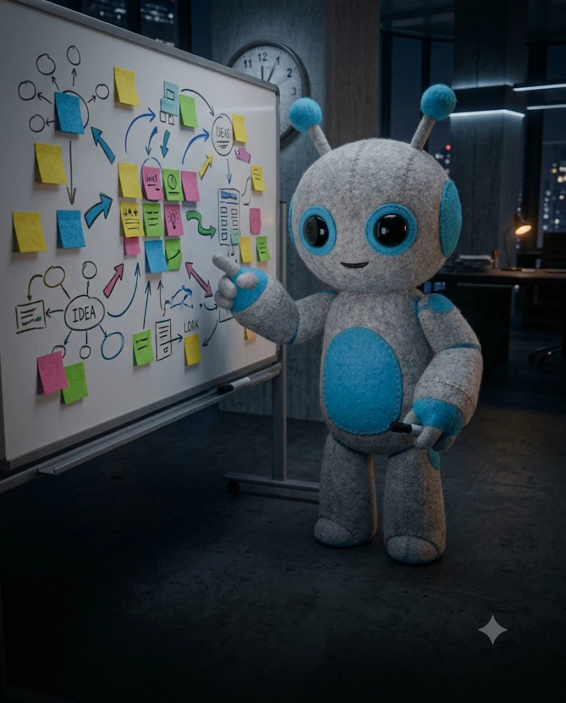

휴대폰 녹음 앱이나 회의 앱의 받아쓰기(텍스트)를 그대로 붙여 넣으세요. 다듬지 않아도 됩니다.
아래는 회의 받아쓰기야. 받아쓰기에 없는 내용은 절대 쓰지 마. 이 회의에서 확정된 결정만 번호 목록으로 정리해 줘. 논의만 하고 정하지 않은 건 빼. [받아쓰기 붙여넣기]
회의를 안건별로 나눠 줘. 안건마다 논의 요약 2줄, 결론 1줄. 결론이 없으면 '미결'로 표시.
누가 어떤 의견을 냈는지 사람별로 한 줄씩 정리해 줘. 이름이 불분명하면 '참석자1'처럼 표시.
회의에 못 온 사람도 바로 이해하게 결론부터 3줄로 요약해 줘.
회의에서 나온 숫자와 날짜만 표로 뽑아 줘. 열: 항목 · 값 · 받아쓰기에서 나온 문장
답이 안 나온 질문과 다음에 정해야 할 것만 따로 목록으로 뽑아 줘.
지금까지 정리한 내용을 아래 순서의 회의록으로 써 줘. 일시 · 참석자 · 안건 · 결정 사항 · 할 일 · 미결 사항 · 다음 회의
이 회의록에서 참석자마다 다르게 이해할 수 있는 애매한 문장을 찾아 더 분명하게 고쳐 줘.
같은 대화창에서 이어서 보내세요. 회의록을 다시 붙일 필요가 없습니다.
회의에서 나온 할 일을 표로 만들어 줘. 열: 할 일 · 담당 · 마감 · 관련 결정 담당이 불분명하면 '미정', 마감이 없으면 '정해야 함'.
위 표에서 [내 이름]에게 떨어진 일만 마감이 가까운 순서로 뽑아 줘. 각 일마다 첫 번째로 할 행동 한 줄도.
담당이 '미정'인 일마다 회의 내용을 보고 가장 적합해 보이는 사람과 이유를 제안해 줘.
할 일 중에 다른 일이 끝나야 시작할 수 있는 것을 찾아 순서를 정리해 줘.
마감이 너무 촉박해 보이는 일을 찾아 이유와 조정안을 제안해 줘.
할 일 표를 체크박스 목록으로 바꿔 줘. 사람별로 묶어서.
마감 하루 전 담당자에게 보낼 알림 메시지를 할 일마다 한 줄씩 써 줘. 부드러운 말투로.
미결 사항과 할 일 진행 상황으로 다음 회의 안건 초안을 3개 만들어 줘.
회의 끝나고 1시간 안에 보내는 후속 메일이 할 일을 실제로 움직이게 합니다.
참석자에게 보낼 후속 메일을 써 줘. 제목 1줄, 본문: 오늘 결정 3줄 · 할 일 표 · 다음 회의 일정 · 수정할 내용 있으면 회신 부탁 한 줄.
회의에 오지 못한 사람에게 보낼 요약을 5줄로 써 줘. 그 사람에게 떨어진 일이 있으면 맨 위에.
팀 채팅방에 올릴 공지로 바꿔 줘. 7줄 이내, 할 일은 '@이름' 형식으로.
이 회의 결과를 팀장에게 보고할 3줄 요약으로 바꿔 줘. 결정, 위험, 필요한 지원.
외부 협력사에 보낼 버전으로 바꿔 줘. 내부 의견과 민감한 숫자는 빼고.
참석자 후속 메일을 자연스러운 비즈니스 영어로 바꿔 줘.
이 회의에서 시간이 낭비된 부분 3가지와 다음 회의에서 바꿀 점을 제안해 줘.
오늘 쓴 회의록과 후속 메일 형식을 다음 회의에도 쓸 수 있게 빈칸 템플릿으로 만들어 줘.
PART 1의 '회의록 양식 맞추기' 뒤에 "아래 양식에 맞춰 줘"와 함께 붙여 넣으세요.
[회의록] 회의명: 일시: [날짜 시간] · 장소: 참석: ■ 결정 사항 1. 2. ■ 할 일 | 할 일 | 담당 | 마감 | | | | | ■ 미결 사항 - ■ 다음 회의 - 일시: - 안건:
자리에 돌아오자마자 이 순서대로 하면 정리가 10분 안에 끝납니다.
| 시간 | 할 일 | 쓰는 프롬프트 |
|---|---|---|
| 0~2분 | 받아쓰기 붙이고 결정만 뽑기 | 01 |
| 2~4분 | 회의록 양식으로 정리 | 07 |
| 4~6분 | 할 일 표 + 내 할 일 | 09 · 10 |
| 6~9분 | 참석자 후속 메일 | 17 |
| 9~10분 | 팀 채팅방 공지 | 19 |
휴대폰 기본 녹음 앱이나 회의 앱 대부분에 받아쓰기(텍스트 변환) 기능이 있습니다. 회사에서 쓰는 도구의 기능을 먼저 확인해 보세요.
두세 번 나눠 붙이고 마지막에 '지금까지 붙인 받아쓰기 전체로'라고 쓴 뒤 01번을 보내세요.
회의 녹음은 참석자에게 미리 알리고 동의를 받는 게 원칙입니다. 회사 규정도 확인하세요.
01번 첫 줄의 '받아쓰기에 없는 내용은 절대 쓰지 마'를 빼지 말고, 08번으로 애매한 문장을 한 번 더 점검하세요.
이메일만 남기면 바로 열려요. 다음 자료가 나오면 먼저 알려드릴게요.